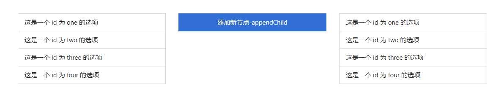

通过 Document 对象创建一个新的元素节点（标签），具体语法格式如下:
document.createElement(标签名)我们可以通过一个案例，对 createElement() 方法进行学习:
这是 HTML 页面中显示一组列表，我们通过 createElement() 方法向这组列表添加一个选项。具体代码如下:
// 1. 创建新的 <li> 标签（元素节点）
var li = document.createElement('li');
// 设置新创建的 <li> 标签的样式
li.className = 'list-group-item active';
// 2. 获取 HTML 页面的 <ul> 标签
var ul = document.getElementById('container');
// 3. 将新创建的 <li> 标签添加到 <ul> 标签中
ul.appendChild(li);添加成功之后的 HTML 页面效果如下图所示:
列表中最后显示为蓝色的选项就是通过 JavaScript 代码动态添加的。
通过 Document 对象创建一个新的文本节点（文本内容），具体语法格式如下:
document.createTextNode(文本内容)我们可以通过一个案例，对 createTextNode() 方法进行学习:
这是 HTML 页面中显示一组列表，我们通过 createTextNode() 方法向列表中最后一个选项添加一段文本内容。
// 1. 创建文本节点
var textNode = document.createTextNode('我是新来滴...');
// 2. 获取 id 为 five 的 <li> 标签
var li = document.getElementById('five');
// 3. 将文本节点作为 <li> 标签的子节点添加
li.appendChild(textNode);添加成功之后的 HTML 页面效果如下图所示:
列表中最后显示为蓝色选项的文本内容就是通过 JavaScript 代码动态添加的。
通过 Document 对象创建一个新的属性节点，具体语法格式如下:
document.createAttribute(属性名称)值得注意的是: 由于属性节点并不是子节点。
在实际开发中，创建属性节点使用的场景较少，只需要了解即可。
// 1. 获取 <div> 标签
var node = document.getElementById("div");
// 2. 创建属性节点
var a = document.createAttribute("my_attrib");
// 3. 设置属性节点的 nodeValue
a.nodeValue = "属性值";
// 4. 将属性节点添加到 <div> 标签中
node.setAttributeNode(a);属性节点的具体操作，主要分为以下两方面:
通过 HTML 页面的指定标签查找其父节点，我们可以通过如下属性实现:
node.parentNode我们可以通过如下示例来学习 parentNode 的使用:
在上述 HTML 页面中，我们获取 id 为 childDiv1 的 <div> 标签的父节点，并且改变背景颜色。
var btn1 = document.getElementById('btn1');
btn1.onclick = function(){
var childDiv1 = document.getElementById('childDiv1');
var parentDiv = childDiv1.parentNode;
parentDiv.style.backgroundColor = 'lightgreen';
}运行代码后的 HTML 页面效果如下:
值得注意的是:
- parentNode: 表示获取指定节点的父节点。一个元素节点的父节点可能是一个元素(Element )节点，也可能是一个文档(Document )节点。
- parentElement: 表示获取当前节点的父元素节点。如果该元素没有父节点，或者父节点不是一个元素节点，则返回 null。
我们通过如下代码进行测试，对比两者之间的区别:
var btn2 = document.getElementById('btn2');
btn2.onclick = function(){
var htmlNode = document.documentElement;
console.log('<html>标签的parentNode: '+htmlNode.parentNode);
console.log('<html>标签的parentElement: '+htmlNode.parentElement);
}上述 JavaScript 代码运行的结果如下:
<html>标签的parentNode: [object HTMLElement]
<html>标签的parentElement: null原因在于 <html> 标签的父节点是文档节点。文档节点并不是一个元素节点，所以 parentElement 返回 null。
通过 HTML 页面的指定标签查找其子节点，我们可以通过如下属性实现:
firstChild: 获取指定标签的第一个子节点。lastChild: 获取指定标签的最后一个子节点。childNodes: 获取指定标签的所有子节点。我们可以通过如下示例来学习获取子节点 3 个属性的使用:
说明: 下述示例代码只能在 IE 8 版本及之前的版本中运行，不能在 Chrome 等浏览器运行，否则报错。
在上述 HTML 页面中，我们获取 id 为 parentDiv 的 <div> 标签的第一个子节点，并且改变背景颜色。
var btn3 = document.getElementById('btn3');
btn3.onclick = function(){
var parentDiv = document.getElementById('parentDiv');
var firstChild = parentDiv.firstChild;
firstChild.style.backgroundColor = 'lightgreen';
}运行代码后的 HTML 页面效果如下:
我们获取 id 为 parentDiv 的 <div> 标签的最后一个子节点，并且改变背景颜色。
var btn4 = document.getElementById('btn4');
btn4.onclick = function(){
var parentDiv = document.getElementById('parentDiv');
var lastChild = parentDiv.lastChild;
lastChild.style.backgroundColor = 'lightgreen';
}运行代码后的 HTML 页面效果如下:
我们获取 id 为 parentDiv 的 <div> 标签的所有子节点，并且改变背景颜色。
var btn5 = document.getElementById('btn5');
btn5.onclick = function(){
var parentDiv = document.getElementById('parentDiv');
var children = parentDiv.childNodes;
for (var i=0;i<children.length;i++) {
children[i].style.backgroundColor = 'lightgreen';
}
}运行代码后的 HTML 页面效果如下:
在上述测试获取指定节点的子节点时，我们规定必须要在 IE 8 版本或之前的版本中运行，而不能在其他浏览器中运行。原因在于 DOM 遍历节点时，并不是我们所想象的那样。
我们所想象的浏览器遍历 DOM 时，解析的结果应该是如下图所示:
有些浏览器在遍历 DOM 时，会在元素节点之间添加一个文本节点，不管这个文本节点的内容是否为空（即空白节点）。
不会自动添加空白节点的浏览器只有 IE 8 版本以及之前的版本。换句话讲，IE 9 及之后的版本、Chrome、Firefox 和 Safari 等浏览器都会自动添加空白节点。
这个问题的解决，可以通过 getElementsByTagName() 方法实现。例如如下代码的改写:
var btn3 = document.getElementById('btn3');
btn3.onclick = function(){
var parentDiv = document.getElementById('parentDiv');
//var firstChild = parentDiv.firstChild;
var firstChild = parentDiv.getElementsByTagName('div')[0];
firstChild.style.backgroundColor = 'lightgreen';
}通过 HTML 页面的指定标签查找兄弟节点，我们可以通过如下属性实现:
previousSibling: 获取指定节点的前一个兄弟节点。nextSibling: 获取指定节点的后一个兄弟节点。我们可以通过如下示例来学习获取兄弟节点 2 个属性的使用:
在上述 HTML 页面中，我们获取 id 为 two 的 <li> 标签的前一个兄弟节点，并且改变背景颜色。
var btn6 = document.getElementById('btn6');
btn6.onclick = function(){
var two = document.getElementById('two');
// 中间存在一个空白节点
var one = two.previousSibling.previousSibling;
one.className = 'list-group-item active';
}运行代码后的 HTML 页面效果如下:
我们获取 id 为 two 的 <li> 标签的后一个兄弟节点，并且改变背景颜色。
var btn7 = document.getElementById('btn7');
btn7.onclick = function(){
var two = document.getElementById('two');
// 中间存在一个空白节点
var three = two.nextSibling.nextSibling;
three.className = 'list-group-item active';
}运行代码后的 HTML 页面效果如下:
向 HTML 页面标签插入新的标签或者其他标签，我们可以通过如下方法实现:
appendChild(): 将一个节点添加到指定父节点的子节点列表末尾。parent.appendChild(child)insertBefore(): 在当前节点的某个子节点之前再插入一个子节点。parent.insertBefore(newChild,currentChild)我们可以通过如下示例来学习插入节点的使用:

在上述 HTML 页面中，我们向 id 为 first 的 <ul> 标签的子节点列表末尾添加一个新的 <li> 标签。
var btn1 = document.getElementById('btn1');
btn1.onclick = function(){
var first = document.getElementById('first');
var li = document.createElement('li');
li.className = 'list-group-item active';
first.appendChild(li);
}运行代码后的 HTML 页面效果如下:
我们向 id 为 first 的 <ul> 标签的 id 为 two 的 <li> 子节点添加一个新的 <li> 标签。
var btn2 = document.getElementById('btn2');
btn2.onclick = function(){
var first = document.getElementById('first');
var two = document.getElementById('two1');
var li = document.createElement('li');
li.className = 'list-group-item active';
first.insertBefore(li,two);
}运行代码后的 HTML 页面效果如下:
在上述示例中，我们都是向指定节点插入一个创建的新标签。那如果我们是将一个已存在 HTML 页面的标签插入到指定标签中，又会是什么样子的效果呢？
var btn3 = document.getElementById('btn3');
btn3.onclick = function(){
var second = document.getElementById('second');
var two = document.getElementById('two1');
two.className = 'list-group-item active';
second.appendChild(two);
}运行代码后的 HTML 页面效果如下:
从 HTML 页面中删除指定元素节点（标签），我们可以通过以下方法实现:
parentNode.removeChild(childNode)我们可以通过如下示例来学习插入节点的使用:
在上述 HTML 页面中，我们向 id 为 first 的 <ul> 标签的子节点列表末尾添加一个新的 <li> 标签。
var btn = document.getElementById('btn');
btn.onclick = function(){
var parent = document.getElementById('container');
var two = document.getElementById('two');
parent.removeChild(two);
}运行代码后的 HTML 页面效果如下:
将 HTML 页面中指定元素节点（标签）被替换，我们可以通过以下方法实现:
parentNode.replaceChild(newChild,oldChild)我们可以通过如下示例来学习插入节点的使用:
在上述 HTML 页面中，我们向 id 为 first 的 <ul> 标签的子节点列表末尾添加一个新的 <li> 标签。
var btn = document.getElementById('btn');
btn.onclick = function(){
var parent = document.getElementById('container');
var two = document.getElementById('two');
parent.removeChild(two);
}运行代码后的 HTML 页面效果如下:
将 HTML 页面中指定元素节点（标签）进行复制，我们可以通过以下方法实现:
node.cloneNode(boolean)需要说明的是:
cloneNode()方法的参数表示是否采用深度克隆。如果为true，则该节点的所有后代节点也都会被克隆；如果为false，则只克隆该节点本身。
我们可以通过如下示例来学习插入节点的使用:
在上述 HTML 页面中，我们向 id 为 first 的 <ul> 标签的子节点列表末尾添加一个新的 <li> 标签。
var btn = document.getElementById('btn');
btn.onclick = function(){
var parent = document.getElementById('container');
var two = document.getElementById('two');
var newLi = two.cloneNode(true);
newLi.className = 'list-group-item active';
parent.appendChild(newLi);
}运行代码后的 HTML 页面效果如下:
本笔记的内容免费开源，任何人都可以免费学习、分享，甚至可以进行修改。但需要注明作者及来源，并且不能用于商业。
本笔记采用知识共享署名-非商业性使用-禁止演绎 4.0 国际许可协议进行许可。